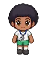

Wiki › Characters › Masseur Tonho

Masseur Tonho
Brazil
Going hunting? Stock up! I've got Stamina Bottles and Focus Drinks in every size. And I buy whatever you bring back from the hunt.
Where to find
🗺️ Legendary Stadium — embaixo of the map (south), near the sign “🎯 HUNTING AREA: Stadium Tunnel”
🧭 Path: from Campinho Village: Campinho Village → Footvolley Beach → City → Youth Training Center → Legendary Stadium
Sells
| Item | Level | Shop price | |
|---|---|---|---|
| Stamina Bottle Mini | — | 🪙 10 | |
| Focus Drink Mini | — | 🪙 15 | |
| Stamina Bottle | 14 | 🪙 55 | |
| Focus Drink | 20 | 🪙 70 | |
| Stamina Bottle Medium | 35 | 🪙 160 | |
| Focus Drink Medium | 38 | 🪙 170 | |
| Stamina Bottle Big | 70 | 🪙 450 | |
| Focus Drink Big | 70 | 🪙 420 | |
| Stamina Bottle Strong | 110 | 🪙 1,200 | |
| Focus Drink Strong | 110 | 🪙 1,100 | |
| Stamina Bottle Supreme | 200 | 🪙 2,600 | |
| Focus Drink Supreme | 200 | 🪙 2,400 | |
| Stamina Bottle Legendary | 300 | 🪙 5,200 | |
| Focus Drink Legendary | 300 | 🪙 4,800 |